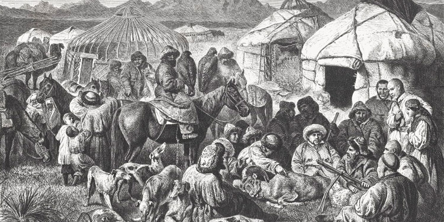

The history of Kyrgyzstan spans from ancient petroglyphs to the Great Silk Road, from the Soviet Union to the country's adoption of independence. Kyrgyzstan has long been a historically significant point in the heart of Asia, as it was situated at the crossroads of trade routes and empires. Positioned directly between the Chinese, Persian, Arab, Indian, Turkic, and Russian empires, the land that today forms Kyrgyzstan has shaped the history of many peoples, religions, cultures, and travelers. Central Asia and the areas around the Tien Shan mountains have been inhabited for thousands of years, as evidenced by petroglyphs and numerous archaeological finds. The city of Osh in southern Kyrgyzstan is one of the oldest settlements in Central Asia and has been known since ancient times. Some of the early settlers were nomadic pagans who practiced Tengrism, an ancient monotheistic religion centered around nature.
Before the Battle of Talas in 751 CE between the Tang Dynasty of China and the Abbasid Arab Caliphate, Central Asia was primarily a Buddhist territory, although, of course, there were other religions and cultures present, brought by travelers and merchants along the Great Silk Road. The Battle of Talas marked a turning point, after which Islam became the dominant religion and began to exert significant influence on the region as a whole. The Karakhanids were one of the early Muslim dynasties, and they incorporated many ancient Turkic elements into Islam. Ruling from the 9th to the 11th century, during this period they constructed the Burana Tower (all that remains today of the capital of their empire, Balasagun) and mausoleums in Uzgen.
Starting from the 13th century, when Asia underwent Mongol conquest, the people who became the ancestors of today's ethnic Kyrgyz migrated from the area around the Yenisei River in Siberia to the Tien Shan mountains. The Tien Shan remained under Mongol control for several hundred years, with rulers including the Kalmyks, Oirats, and Dzungars. In the 18th century, the Qing Dynasty in China reached its greatest extent, and the Oirats became a vassal state. With the emergence of the Khanate of Kokand in the early 1700s, Kyrgyzstan came under the rule of its leaders. The history of Kyrgyzstan records that during this time, the region was an important stop for travelers on the Silk Road crossing Asia. Today, tourists can witness Tash Rabat, a 15th-century stone caravanserai in Naryn. The languages and cultures of many countries, thanks to merchants and wanderers traveling through the territories of present-day Kyrgyzstan, have had a significant influence on the people living in this area. Central Asia was a key prize in the Great Game of imperial expansion in the 19th century, played out between Russia to the north and Britain to the south. During this time, the influence of the Khanate of Kokand weakened, allowing local rulers in the regions to gain significantly more power. When the ruler of Alai (southern Kyrgyzstan), Alimbek Datka, was killed during a palace coup, his wife, Kurmanjan, became the new leader of the territory in 1862.
In 1867, the Alai region was annexed by the Russian Empire, and Kurmanjan Datka emerged as a prominent figure in the struggle for its liberation. The 2014 film about Kurmanjan depicted her life and achievements, and today she is regarded as a significant part of Kyrgyzstan's history. From 1867 to 1918, Kyrgyzstan remained part of the Turkestan Governorate-General of the Russian Empire. During this period, Turkestan, despite being far from the central decision-making in St. Petersburg, saw significant infrastructural developments, including the construction of railways. However, these developments primarily served the interests of Russia and did little to benefit the local population. The events of 1916, known as the Basmachi Revolt, marked a turning point, leading to widespread discontent and resistance. Eventually, various ethnic groups, including Uzbeks, Kazakhs, and Kyrgyz, rallied against both the colonial regime and later the communist party's intrusion from China. The establishment of the Soviet Socialist Republic in 1917 led to further division based on ethnic criteria in Turkestan. This period saw movements of populations based on religion, ethnicity, or allegiance to different states, resulting in the consolidation of power by certain ethnic groups and the marginalization of others. As a consequence, Kyrgyzstan was granted autonomous oblast status in 1924 and later became a constituent republic of the Soviet Union in 1926. Alongside other republics, it formed the Union of Soviet Socialist Republics. In 1936, after the city of Frunze (now Bishkek) became the capital, it was officially named the Kyrgyz Soviet Socialist Republic. During this time, Chingiz Aitmatov, a renowned writer, diplomat, and politician, emerged as one of the key figures shaping Kyrgyzstan's Soviet era.
On August 31, 1991, the Republic of Kyrgyzstan declared its independence from the Soviet Socialist Republic. Since 1990, Askar Akayev had been the president of the newly formed republic, leading up to the events of the Tulip Revolution in 2005. Amidst political turbulence, the protests in 2010 ousted President Bakiev and subsequently brought an end to Akayev's presidency. Ethnic tensions and communal violence between Kyrgyz and Uzbeks escalated, particularly after the events in Osh in 1990. Roza Otunbayeva emerged as a transitional leader in April 2010, amid widespread unrest, particularly among the majority Muslim population, and became the first woman to lead the country after the country's independence. However, elections held in 2011 led to a peaceful transfer of power to Almazbek Atambayev, who assumed the presidency. During Atambayev's tenure from 2011 to 2017, Kyrgyzstan experienced relative stability, marked by both domestic and international events, including hosting the World Nomad Games in 2014 and 2016.
Kyrgyzstan's territory lies within Central Asia, forming a unique cultural and historical mosaic. Archaeological findings indicate that this region was inhabited by ancient peoples who gradually settled here after the last Ice Age. The formation of the Kyrgyz ethnicity involved the convergence of various ethnic groups from Siberia and Central Asia. Throughout history, Kyrgyzstan's territory has been home to diverse civilizations and millions of people. Notable civilizations include the Kushan Empire (3rd century BCE to 2nd century CE) and the Sakas (3rd century BCE to 3rd century CE), Usuns (3rd to 1st centuries BCE), and the Davan state (pre-4th century BCE). During the 4th and 3rd centuries BCE, Kyrgyz tribes, among others, migrated to this region and clashed with the dominant Chinese Han dynasty. Notably, the Kyrgyz tribes settled in the valleys of the Enisei River (known as the "Mother River" in Kyrgyz) and the "Bai Kel" region, where they encountered local indigenous tribes and interacted with the Xiongnu (Huns) near Lake Baikal (Khövsgöl Nuur). It was during this period that they established their first nascent state. These encounters were often marked by conflicts, as evidenced by runic inscriptions found in burial sites. Despite the lack of a developed writing system at the time, the epic poem "Manas" emerged as a repository of Kyrgyz history, values, and aspirations. In the 5th century CE, Kyrgyzstan witnessed the migration of the Huns and the formation of the Great Kyrgyz Khanate, which extended from the Altai Mountains to the Sayan Mountains, encompassing parts of General Siberia, Mongolia, Lake Baikal, the Irtysh River, Kashgaria, Issyk-Kul, and the Talas region. During the 18th century, the Kyrgyz found themselves caught between the competing interests of the Qing Dynasty of China and the Dzungar Khanate, leading to conflicts in the Tian Shan region. By the mid-18th century, they had largely been subjugated by the Dzungars. In 1863, Northern Kyrgyzstan was annexed by the Russian Empire, followed by the Southern part in 1876. After the Bolshevik Revolution, Kyrgyzstan joined the Soviet Union alongside other Soviet republics and nationalities. In 1918, Kyrgyzstan became part of the Turkestan Autonomous Soviet Socialist Republic. Following significant political and territorial changes, and in response to the asymmetry within the Soviet Union's republics and the overall structure of Central Asian Soviet republics, on October 14, 1924, it became the Kara-Kyrgyz Autonomous Oblast within the RSFSR (Russian Soviet Federative Socialist Republic), which was later upgraded to the Kirghiz Autonomous Soviet Socialist Republic on February 1, 1926, and finally, on December 5, 1936, it became the Kirghiz Soviet Socialist Republic. To strengthen national identity and establish closer ties with other Soviet republics, the Soviet republics implemented a series of reforms, culminating in Kyrgyzstan's declaration of independence on August 31, 1991. The first constitution of the Kyrgyz Republic was adopted on May 5, 1993, and on May 10, 1993, the national currency, the som, was introduced.